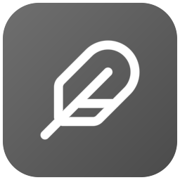

선택한 문장에서 바로 퀵 노트
문장을 선택하고 메모를 남깁니다. 저장한 메모의 출처 링크로 원래 문장에 돌아올 수 있습니다.


Lof WriterLOCAL FIRST WRITING TOOL
무료 · 오픈소스 · 가입 없이 시작

원고는 내 기기의 Markdown 파일로 저장합니다. 다른 편집기에서도 열 수 있습니다.
회차별 분량, 플롯과 메모, 북마크와 수정 이력을 한 서재에서 관리합니다.
Windows와 Android를 실시간 동기화로 연결하거나, 외부 저장소를 연결해 원고를 옮깁니다.
에피소드와 플롯, 메모를 작품별로 모아 둡니다. 회차마다 집필 상태와 분량을 확인하고, 다음에 쓸 이야기를 정리하세요.
작품 관리 화면 크게 보기 ↗
탭으로 문서를 오가고, 분할 화면으로 원고와 플롯을 나란히 봅니다. 회차에 연결한 메모와 목표 분량도 집필 화면에서 바로 확인합니다.

글을 쓰다 잠깐 멈춘 자리에서 생각을 남기세요. 원고의 위치를 기억해 두면 다음 집필을 이어 가기 쉽습니다.
문장을 선택하고 메모를 남깁니다. 저장한 메모의 출처 링크로 원래 문장에 돌아올 수 있습니다.
다시 읽고 싶은 문단에 표시를 남겨 두세요. 작품별 북마크를 모아 보고 원하는 위치로 이동합니다.

플롯과 메모에 표를 넣고, 문서에 필요한 속성을 붙입니다. 설정과 참고 자료를 찾기 쉽게 관리하세요.

작은 화면에서의 줄바꿈과 읽는 흐름을 살펴봅니다. 화면 폭과 글자 크기를 바꿔 원고를 확인하세요.

START YOUR NEXT CHAPTER
사용하는 기기에 맞는 버전을 내려받으세요.
원고와 메모는 각 기기에 저장됩니다.
64비트 Windows용 MSI 설치 파일
Windows 다운로드1.1.0 · 정식 · 릴리즈 노트 ↗
Android 7.0 이상 · ARM64 기기용 APK
Android APK 다운로드0.0.4 · 정식 · 릴리즈 노트 ↗
Android는 APK를 직접 설치합니다. 설치할 때 브라우저나 파일 앱의 ‘이 출처 허용’을 켜 주세요. 첫 실행 시 서재 폴더 사용을 위한 파일 접근 권한을 요청합니다. 사용 안내 ↗